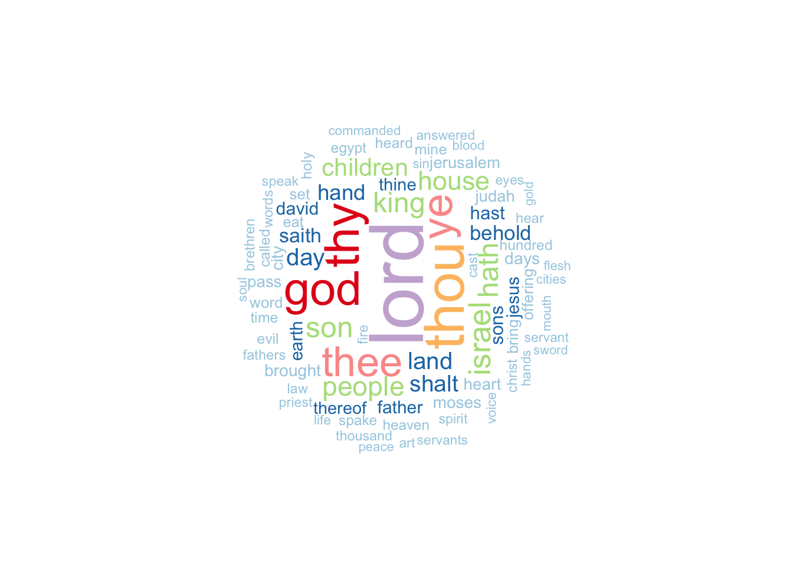
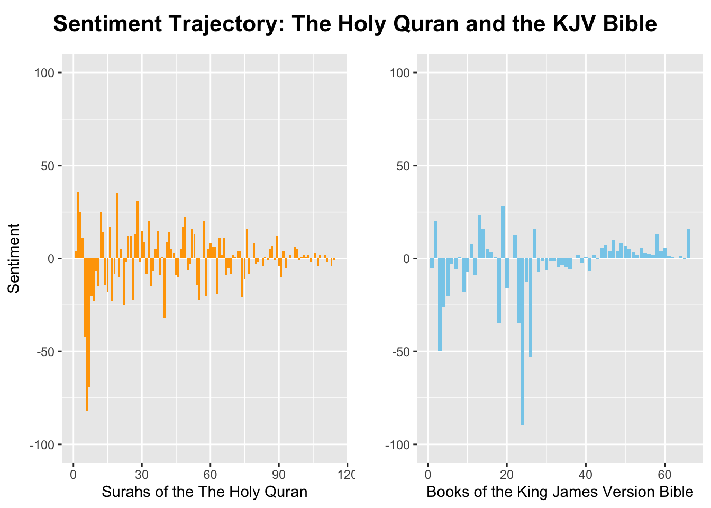

How does the form and style of different holy books differ?
This page seeks to answer this question through an analysis of the textual similarities and differences between the Quran and the King James Version Bible. While one can engage–and certainly many have—in comparative literary analyses between these two texts, tracking key style patterns through textual quantifications and visualization opens up possibilities for new and different insights.
A note on translation
The Holy Quran is the central holy text of Islam, while the Bible is the central holy text of Christianity. The Quran was originally written in Arabic and the Bible in Hebrew (Old Testament) and Greek (New Testament). A small portion of the Old Testament was written in Biblical Aramaic. As such, it is worth noting that any textual analysis of these texts is an analysis of translations, wherein notes on form and style refer to both the “heart” of the text and to the translation at hand.
Background
The Quran and the Bible have a lot in common, including shared stories and moral teachings, and assertion of a monotheistic god. They also have some clear differences: the Quran is much shorter at 6,236 ayahs (verses) while the King James Version of the Bible has 31,102 verses; the Quran is believed to have been revealed and recorded within a short frame of time, while the writing of the Bible occurred across centuries by many different authors;and the Quran is more lyrical and repetitious, while the Bible places more emphasis on storytelling. These differences represent but a sample of the ways in which the two texts can and have been contrasted. In my text analysis, I seek to identify other ways of comparing these two holy books. I begin with an ayah/verse-level analysis and then transition to a word-level analysis.
In the text of the Quran, these symbols appear semi-regularly: ˹ ˺. They do not appear in the KJV Bible.
# creating a table with the counts, totals, and proportions of times in which ˹ ˺ appear in an ayah or verse. holy_books |>group_by(title) |>summarize(sum(str_detect(text, "˹[A-Za-z ]+˺")),total =n()) |>rename(symbol_count =2) |>mutate(proportion = symbol_count/total) |>rename("Holy Books"= title, "Symbol Count"= symbol_count,Total = total,Proportion = proportion) |>kable()
Holy Books
Symbol Count
Total
Proportion
King James Version Bible
0
31103
0.0000000
The Holy Quran
3291
6236
0.5277421
In fact, over half of the ayahs in the Quran include this symbol. We can take a closer look at what kinds of phrases are bracketed in by these symbols:
# creating a table to further investigate the kinds of words and phrases that are typically within ˹ ˺. quran |>filter(str_detect(text, "˹[A-Za-z ]+˺")) |>slice_head(n =10) |>select(surah_chapter, ayah_verse, text) |>mutate(surah_chapter = surah_chapter, ayah_verse = ayah_verse, text = text, symbol =str_extract(text, "˹[A-Za-z ]+˺")) |>rename("Surah Number"= surah_chapter,"Ayah Number"= ayah_verse,"Ayah Text"= text, "Symbol Text"= symbol) |>kable()
Surah Number
Ayah Number
Ayah Text
Symbol Text
1
5
You ˹alone˺ we worship and You ˹alone˺ we ask for help.
˹alone˺
2
4
and who believe in what has been revealed to you ˹O Prophet˺ and what was revealed before you, and have sure faith in the Hereafter.
˹O Prophet˺
2
5
It is they who are ˹truly˺ guided by their Lord, and it is they who will be successful.
˹truly˺
2
8
And there are some who say, “We believe in Allah and the Last Day,” yet they are not ˹true˺ believers.
˹true˺
2
10
There is sickness in their hearts, and Allah ˹only˺ lets their sickness increase. They will suffer a painful punishment for their lies.
˹only˺
2
16
They are the ones who trade guidance for misguidance. But this trade is profitless, and they are not ˹rightly˺ guided.
˹rightly˺
2
18
They are ˹wilfully˺ deaf, dumb, and blind, so they will never return ˹to the Right Path˺.
˹wilfully˺
2
19
Or ˹those caught in˺ a rainstorm from the sky with darkness, thunder, and lightning. They press their fingers into their ears at the sound of every thunder-clap for fear of death. And Allah encompasses the disbelievers ˹by His might˺.
˹those caught in˺
2
21
O humanity! Worship your Lord, Who created you and those before you, so that you may become mindful ˹of Him˺.
˹of Him˺
2
22
˹He is the One˺ Who has made the earth a place of settlement for you and the sky a canopy; and sends down rain from the sky, causing fruits to grow as a provision for you. So do not knowingly set up equals to Allah ˹in worship˺.
˹He is the One˺
It is unclear to me exactly what this symbol is intended to indicate as these symbols do not appear in the original Arabic of the Quran or in typical English translations. Generally, they seem to perhaps correlate with instances in which those words contained in the brackets might be emphasized.
Given that this symbol does not appear in most translations of the Quran, it is not necessarily a crucial point of analysis in comparing and contrasting the Quran with the KJV Bible. It does, however, raise an important point about symbols. In the original writings of the Quran and in many translations since, the text contains symbols which give instructions to the reader, such as a symbol indicating that the reader must not stop or a sign indicating that the reader should perform sajda, or prostration (“Rules, Signs, and Symbols in the Quran”). This is a major difference between the Quran and the Bible, as the Bible does not contain these types of symbols.
Dialogue
How often does dialogue appear in these two Holy Books? We can first asses this through counts and proportions of instances in which quotation marks (” “) appear.
# creating a table to show the counts, totals, and proportions of ayahs/verses in which quotation marks appear.holy_books |>group_by(title)|>summarize(sum(str_detect(text, "\\\".+\\\"")),total =n()) |>rename(quote_count =2) |>mutate(proportion = quote_count/total) |>rename(Title = title, "Quotation Count"= quote_count,Total = total,Proportion = proportion) |>kable()
Title
Quotation Count
Total
Proportion
King James Version Bible
0
31103
0.0000000
The Holy Quran
1159
6236
0.1858563
Interestingly, the KJV Bible does not use any quotation marks, while nearly a fifth of the verses in the Quran contain quotations.
It is worth noting that many modern translations of the Bible do include quotation marks. The original text of the Bible did not use quotations nor did the original Arabic of the Quran.
In modern, English translations, however, it is fairly common to include quotation marks as means to indicate speech and dialogue.
In order to include instances of potential dialogue in the KJV Bible, we will also add in our count instances in which the words “said,” “says,” “tells,” “told,” “asks,” or “asked” are used. Certainly there are other words which indicate dialogue and likely there are instances in which these words are connect to phrases which aren’t dialogue, however, using these words in addition to quotation marks gives us a rough estimate of the use of dialogic phrases.
# creating a table to show the counts, totals, and proportions of dialogic phrases in ayahs/verses. holy_books |>group_by(title)|>summarize(sum(str_detect(text, "\\\".+\\\"|said|says|tells|told|asks|asked")),total =n()) |>rename(dialogue_count =2) |>mutate(proportion = dialogue_count/total) |>rename(Title = title, "Dialogue Count"= dialogue_count,Total = total,Proportion = proportion) |>kable()
Title
Dialogue Count
Total
Proportion
King James Version Bible
3903
31103
0.1254863
The Holy Quran
1276
6236
0.2046183
Once words associated with dialogue are included in the count, we can see that about an 8th of the verses in the Bible contain dialogic phrases while a little over a 5th of the ayahs in the Quran contain do. Evidently, dialogue and direct conversation plays a larger role in the Quran than in the Bible.
The Divine
How do the two books compare when it comes to references to the Divine? In the Quran, the Divine is most often referred to as “Allah,” which is Arabic for “God.” In this translation of the Quran, Allah/God is also referred to as “Lord,” “God,” and “Almighty.” In the KJV Bible, the Divine is referred to as “God,” “LORD,” “Lord,” and “Almighty.” Because God is triune in the Bible (God, Jesus, and Holy Spirit), “Christ,” “Jesus,” and the “Holy Spirit” can also be considered references to the Divine in the KJV Bible. (The Christ/Jesus figure appears in The Quran as a prophet, but the Quranic Christ/Jesus is not Divine.)
# a table of counts, totals, and proportions of times in which the Divine is mentioned (not including "Jesus," "Christ," and "Holy Spirit")holy_books |>group_by(title) |>summarize(sum(str_detect(text, "Allah|LORD|Lord|God|Almighty")),total =n()) |>rename(divine_count =2) |>mutate(proportion = divine_count/total) |>rename(Title = title, "Divine Count without Jesus/Christ/Holy Spirit"= divine_count,Total = total, Proportion = proportion) |>kable()
Title
Divine Count without Jesus/Christ/Holy Spirit
Total
Proportion
King James Version Bible
8858
31103
0.2847957
The Holy Quran
2681
6236
0.4299230
# a table of counts, totals, and proportions of times in which the Divine is mentioned (including "Jesus," "Christ," and "Holy Spirit")holy_books |>group_by(title) |>summarize(sum(str_detect(text, "Allah|LORD|Lord|God|Almighty|Jesus|Christ|Holy Spirit")),total =n()) |>rename(divine_count =2) |>mutate(proportion = divine_count/total) |>rename(Title = title, "Divine Count including Jesus/Christ/Holy Spirit"= divine_count,Total = total, Proportion = proportion) |>kable()
Title
Divine Count including Jesus/Christ/Holy Spirit
Total
Proportion
King James Version Bible
9681
31103
0.3112561
The Holy Quran
2694
6236
0.4320077
The Divine is referred to in approximately 43% of ayahs in the Quran and about 31% of the verses in the KJV Bible once the triune God is taken into account. These percentages aren’t drastically different, but nevertheless, it is clear that the Quran includes more verses with direct reference to God.
Most common words
Wordclouds of the most common words in the Quran and in the Bible further indicate how prominent the Divine figure is within both texts, but particularly within the Quran. Other important words in the Quran include “people” and “prophet.” Frequently used words in the Bible which aren’t necessarily a direct reference to the Divine include “thou,” “thy” and “ye”—all words which reference a “you.”
# making a wordcloud of the top (non stop) words in the Quran based on size. quran_no_stop_df <- quran_no_stop |>slice_head(n =80) |>data.frame()color_assignment <-brewer.pal(9, "Pastel1")quran_wordcloud <-wordcloud2( quran_no_stop_df, size =1, shape ='circle',minSize =1, color = color_assignment)quran_wordcloud
# making a wordcloud of the top (non stop) words in the Bible based on size. wordcloud(words = bible_no_stop$word, freq = bible_no_stop$n, max.words =80, random.order =FALSE, rot.per =0.35,colors =brewer.pal(9, "Paired"))

Positive vs. Negative Sentiment Analysis
A visual trajectory of textual positive-negative sentiment demonstrates that these two texts have differing trajectories.
# creating a plot of sentiment trajectory over the Bible using the "bing" lexiconbible_plot <- holy_books_words |>filter(title =="King James Version Bible") |>inner_join(bing_sentiments) |>count(title, index = book, sentiment) |>pivot_wider(names_from = sentiment, values_from = n, values_fill =0) |>mutate(sentiment = (positive - negative)/9.068679) |>ggplot(aes(x = index, y = sentiment)) +ylim(-100, 100)+geom_col(show.legend =FALSE, fill ="skyblue") +labs(x ="Books of the King James Version Bible",y ="")# The Quran has 150405 words while the KJV Bible has 789668 words. This makes the Bible approximately 5.25 times larger (word-wise) than the Quran. Additionally, the words of KJV Bible are spread across a variable (books) with 66 levels, while the words of the Quran are spread across a variable (chapters) with 114 levels, making the unit spread of the Bible 1.73 times smaller. In effort to create proportional scales, I divide the sentiment score of the KJV Bible by 9.068679 (5.250287 * 1.727273).
# creating a plot of sentiment trajectory over the Quran using the "bing" lexiconquran_plot <- holy_books_words |>filter(title =="The Holy Quran") |>inner_join(bing_sentiments) |>count(title, index = surah_chapter, sentiment) |>pivot_wider(names_from = sentiment, values_from = n, values_fill =0) |>mutate(sentiment = positive - negative) |>ggplot(aes(x = index, y = sentiment)) +ylim(-100, 100)+geom_col(show.legend =FALSE, fill ="orange") +labs(x ="Surahs of the The Holy Quran",y ="Sentiment")
# putting the two plots togethertitle <-ggdraw() +draw_label("Sentiment Trajectory: The Holy Quran and the KJV Bible", fontface ='bold', size =16, x =0.5, hjust =0.5)holy_book_plots <-plot_grid(quran_plot, bible_plot, nrow =1, align ="h", axis ="t")plot_grid(title, holy_book_plots, ncol =1, rel_heights =c(0.1, 1))

The Quran’s most drastic sentiments are in the beginning. As the Quran progresses, the sentiment continues to bounce between positive and negative, but the variation in sentiment score gradually becomes smaller and smaller as it centers around zero.
The KJV Bible has drastic sentiment scores in the first half, with much greater drastic negatives than positives. Interestingly, the sentiment trajectory of the Bible corresponds with the delineation of Old vs. New Testament: the Old Testament of the KJV is constitutes books one through 39, and this is where we see very drastic variety in sentiment, particularly in numerous books with a large net negative; the New Testament, constituting books 39 through 66 are all positive except the very first, though it is worth noting that these positive sentiment scores are not as large as many of the negative sentiment scores of the Old Testament.
Overall, the Quran’s net surah sentiment appears to trend towards net neutral, while the KJV Bible’s net chapter sentiment appears to begin drastically up and very down, and end on a definitely positive note.
Conclusion
Based on this brief textual comparison of the Quran and the KJV Bible, it is clear that though these two texts may share key similarities, they also have interesting, diverging stylistic characteristics from the use of symbols to the trajectory of the text’s sentiment.
An analysis such as this one does not constitute a comprehensive investigation of stylistic difference. Rather, it is meant to demonstrate that textual-level differences within religious texts can be made quantifiable and visual in compelling and creative ways. Using data science to investigate these holy books on the textual level pushes us to be imaginative about how we can make sense of religious texts in comparison with each other and how we might build upon initial exploration like this in order to find new angles to old analysis.